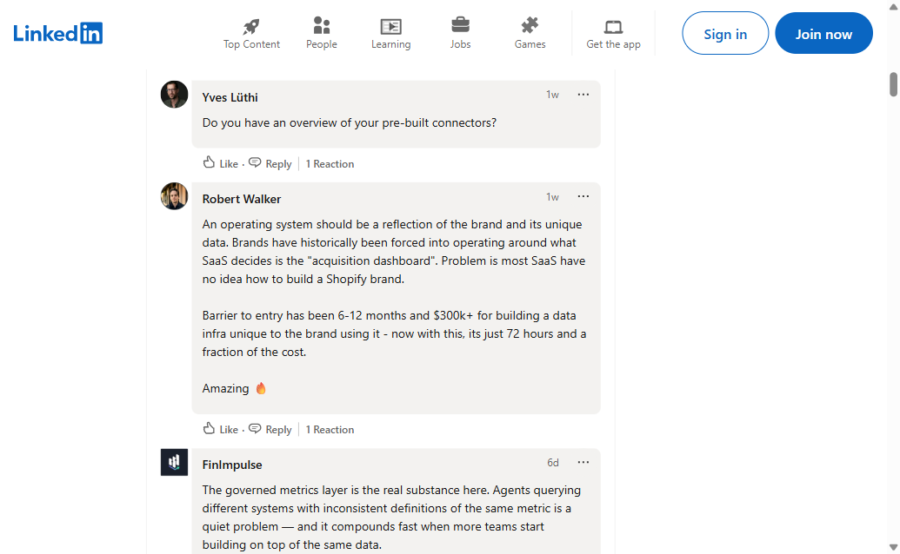

Worked through the JD line-by-line, ran David's recent posts and your case studies through Claude for synthesis. Then built the workflow against last week's launch post.
AI-Native SDR · Hypothetical
Drake Maxwell
The operator who turns David's daily LinkedIn engagement into qualified pipeline.
Warm-by-content, scored by Clay, DM'd within the hour.
For 8 months I've been running a Clay-equivalent enrichment loop, an Instantly-equivalent reply router,
and a HubSpot-equivalent pipeline tracker against my own ventures. The seat I'd add at Polar turns David's daily LinkedIn engagement into warm pipeline within the hour. Your AEs work sharper meetings; nobody on the team writes one-off DMs.
Raleigh, NC · remote-ready8 mo hands-on AI infra build4 sales roles · IDeaS, DOPE, PDI, Fello
1 The find that matters
One real prospect surfaced from David's "Dashboards are dead" launch post. The score the pipeline gave it tells the whole story about why Polar pays for Clay.
I ran the workflow described in the JD against last week's Headless BI announcement.
61 reactions, 6 comments, 60+ visible likers. Out of all of that, the visible-from-outside data
surfaced exactly one in-market buyer. The pipeline scored him LOW. Here's what's going on.
LIVE-DATA PIPELINE RUN · 2026-05-06
Yves Lüthi · Head of Tech & Data, X-Bionic
From David's Polar Headless BI launch announcement (1 week ago).
Yves commented: "Do you have an overview of your pre-built connectors?"

Captured 2026-05-06 from LinkedIn. Yves's in-thread comment on David's launch post.
source
Pipeline score (website only)
37
LOW decile · evergreen sequence
→
Add Clay engagement signal
With Clay signal layer
77
TOP decile · DM within the hour
What the website shows
Shopify confirmed
Gorgias detected
21 product links · careers page · B2B/wholesale arm
NOT detected: Klaviyo, analytics tool. Likely scrape gap (European brand, mixed stack)
What Clay would add
Yves just publicly commented on the CEO's launch post
Comment is buying-stage (asking about pre-built connectors)
Title (Head of Tech & Data) signals architectural ownership, not curiosity
Engagement-recency = highest-value signal in the dataset, and it doesn't live on x-bionic.com
Day 1 work
Add an engagement-signal weight layer to the scoring rubric. Take Clay's comment-feed, lift the score on real-time engagers. Turns a LOW-decile website score into a TOP-decile hot lead the same hour the comment lands.
2 The workflow, end-to-end
David's posts → Clay engagement feed → this pipeline → personalized DMs → tagged replies feeding back into the rubric.
Six modules, ~1,000 lines of Node.js. Firecrawl scrapes the site, regex detects the stack, a weighted rubric scores, Claude drafts the DM.
3 The DMs
Three drafted from the actual pipeline run.
Yves got the real one, drafted against his actual comment on David's launch post. Olipop and True Classic got demo drafts against their detected stacks.
Yves Lüthi· Head of Tech & Data, X-BionicShopify · Gorgias · multi-channel (DTC + B2B/wholesale)
Score 77 (with Clay)Top decileSignal-recency
Yves, your connectors question under David's launch post stuck with me. The DTC + wholesale split usually means stitching attribution across two cohort logics that never quite agree. Curious how X-Bionic's running those cuts today. Jones Road's 72-hour migration in the same thread is the closest apparel comp I've seen. Open to 20 minutes comparing notes?
Olipop· prebiotic soda, $137M Series C 2024Shopify · Klaviyo · Triple Whale · subscription · loyalty · careers active
Score 79High decileStack-displace
Saw the $137M Series C announcement. Brands at that scale usually start hitting board-level cohort questions, like whether TikTok-acquired customers retain differently than Meta-acquired. Curious if Olipop's getting those cuts cleanly today. David's recent semantic-layer piece walks through how Polar answers those exact questions on the architecture side. Worth a comparison if it's a current focus?
True Classic's paid-social engine at this catalog depth must surface some sharp questions. Like which first-product entry path drives the strongest 90-day repeat, or where the channel × cohort math stops agreeing with the P&L. David's recent piece on Polar's semantic-layer architecture walks through the data side of those exact cuts. Curious if it lines up with how the team's thinking?
4 Same prospect, different angle
One brand, three buyers. Same product, different language.
Who actually buys Polar · the four-persona map
Persona
Brand size
What they care about
Polar's pitch to them
CEO / Founder
$5M-$30M
Is the business healthy? Are the numbers we're running on trustworthy? Where's the next dollar best spent?
"Polar is the data layer your board will eventually demand"
Head of Growth · VP Marketing · CMO
$20M-$100M
Paid media efficiency, true return on ad spend, channel mix (Meta vs Google vs TikTok), attribution that matches the P&L.
"Polar reconciles Meta + Google + TikTok with Causal Lift on top, proves what really drove revenue"
Head of Data · Head of Analytics
$50M+
Data warehouse, governance, AI-readiness, semantic layer (the dictionary of business terms).
"Polar = warehouse + semantic layer + AI integrations out of the box, no $300K in-house build"
Head of Email · Lifecycle Marketing
any size on Klaviyo
Email revenue, abandoned cart recovery, segmentation accuracy after iOS 14.
X-Bionic running both DTC and wholesale at this scale usually means two reporting universes that don't fully reconcile. DTC on Shopify, wholesale somewhere else, board pack and P&L never quite agree. Curious whether that's a quarterly headache for the team. Polar pulls both into one governed view. Frankie Shop runs the same hybrid shape on it today. Worth 20 minutes on how the reconciliation actually works?
▶Head of Growth / VP Marketing·paid media operatorpaid attribution angle
Noticed the Meta + Google spend across DTC and wholesale. There's a structural attribution gap most multi-channel apparel brands hit. The pixel can't see wholesale demand, so paid spend ends up over-credited to DTC by whatever fraction eventually closed in retail. Curious whether that bias has surfaced in your team's reporting. Polar runs Causal Lift on top of pixel data to separate what drove revenue from what claimed credit. Joseph Joseph cut £577 CAC per cohort on Meta TOFU using it. Worth a look at your top channel?
▶Head of Data · Yves Lüthi·real prospect from David's launch postsemantic-layer architecture angle · LIVE PROSPECT
Yves, your connectors question under David's launch post stuck with me. The DTC + wholesale split usually means stitching attribution across two cohort logics that never quite agree. Curious how X-Bionic's running those cuts today. Jones Road's 72-hour migration in the same thread is the closest apparel comp I've seen. Open to 20 minutes comparing notes?
Olipop · prebiotic soda, $137M Series C 2024Shopify · Klaviyo · Triple Whale · subscription · loyalty · careers active
Quick read on the stage Olipop's at. After a $137M raise, brands typically start fielding deeper board questions: true LTV by acquisition cohort, retention by first-product, the subscription book 18 months out. Curious if those cuts are getting expensive to pull today. Polar's the data layer brands at this scale move to when those become quarterly board questions. Tiege Hanley replaced a $300K in-house build with it. Worth 20 minutes on the architecture?
▶Head of Growth / VP Marketing·paid + retention operatorcohort-cut angle
Saw the $137M Series C announcement. Brands at that scale usually start hitting board-level cohort questions, like whether TikTok-acquired customers retain differently than Meta-acquired. Curious if Olipop's getting those cuts cleanly today. David's recent semantic-layer piece walks through how Polar answers those exact questions on the architecture side. Worth a comparison if it's a current focus?
▶Head of Data / Director of Analytics·architecture buyerbuild-vs-buy angle
Curious where Olipop sits on the data-architecture decision most fast-scaling brands hit around year 2. The typical in-house warehouse move runs 6-9 months and $300K-$500K of team build. Polar ships the architecture out of the box: warehouse, semantic layer, AI-ready metric library. David's Headless BI piece from last week walks through how the data becomes callable by Claude and ChatGPT directly, no dashboard middleman. Worth 20 minutes on the architecture end-to-end?
ILIA Beauty · clean color cosmeticsShopify · Klaviyo · Gorgias · careers active · subscription
Quick read on the email side at beauty brands ILIA's size. Klaviyo sees logged-in shoppers cleanly, but a chunk of post-iOS-14 cart events fire from anonymous traffic that the pixel doesn't catch. Curious whether that gap has surfaced in your flow performance. Modular Closets ran Polar's Klaviyo Flows Enricher to push the missed events back into existing flows and saw +54% email revenue from it. For a brand where email is the retention lever, that's a P&L-level recovery. Worth 20 minutes?
Beauty has some of the highest CAC in DTC right now, and email's the recovery lever. The structural piece most stacks don't connect: paid and email get tracked as separate funnels, so attribution between them gets lost. Curious whether your team's looked at closing that loop. Polar reconciles both AND captures the iOS-14 missing events back into Klaviyo. Frankie Shop ran this end-to-end and got +59% EMQ on Meta. Worth 20 minutes on the paid + email handoff?
▶Head of Email / Lifecycle Marketing·Klaviyo-native operatorKlaviyo flow capture angle
Klaviyo running on the site. Curious how the team's tracking which cart-abandon flows fire vs which ones meet the trigger condition but the event misses. A chunk of iOS-14 anonymous traffic fires events the pixel doesn't catch, so flows skip those abandoners entirely. Polar's Klaviyo Flows Enricher pushes those events back so existing flows fire on the full audience. Modular Closets saw +54% email revenue from it. Worth a look?
5 What I'd do in the first 30 days
Diagnose, don't redesign. Two clean tests with binary readouts. One signal-based playbook by week 4.
Whole bet: most pipeline lift comes from faster and better routing of warm prospects, not from rebuilding the stack.
Week 1 · Audit
Read the machine, don't redesign it
What's our reply rate today, and how does it break by sequence and by prospect type?
What's Clay costing per contact that actually became useful, not per row on the invoice?
What does it cost us to book one real meeting, sliced by where the lead came from?
Where does the David-commenter pipeline get stuck today? That's the bottleneck before I touch anything else.
When prospects say no, are we logging the reason in a clean way, or dumping freeform notes? Freeform = we lose the learning.
What Snowflake dashboards should I be checking every morning that nobody's looking at?
Weeks 2-3 · Test
Two tests with yes-or-no answers
Test A · the X-Bionic hypothesis at scale. Take 100 prospects. Score them two ways: just their website (old way), and website + who's actively commenting on David's posts (new way). DM the top 10 of each list. If the new way gets 1.5× more replies, ship it as the default scoring. Section 1 proved this on one prospect. Test A proves it on a hundred.
Test B · cheap AI vs expensive AI. Same 100 prospects, two AIs do the scoring and write the DMs. One expensive, one cheap. If the cheap one's DMs reply at 90% of the expensive one's rate, ship the cheap one. Saves Polar real money on every send at scale.
Both tests give a yes-or-no answer with a real number behind it. Neither needs engineering. I run them in the stack that's already there.
Sub-2hr cadence stays the same the whole time. We already know fast wins. We're testing the scoring, not the speed.
Week 4 · Build
One playbook that runs itself
Trigger: anyone comments on a David post. The trigger is broad on purpose.
Score: Clay enriches them, the rubric weighs ICP fit + role + engagement-recency + which pain they hinted at.
Filter: only the top decile gets a DM. Non-ICP commenters drop out at scoring, not at trigger.
Angle match: the DM template is picked from the Section 4 persona matrix based on the pain pattern in their comment (multi-channel, Klaviyo, build-vs-buy, cohort cuts).
Flow: new comment → Slack ping → Clay enrichment → score → angle match → DM out, all inside an hour.
Goal: 1.5× our current reply rate on top-decile DMs. If we don't hit it, kill it clean. No "give it another month."
For 8 months I've been building the same operator stack (Clay-equivalent, Instantly-equivalent, HubSpot-equivalent) for my own ventures. The demand engine at Polar is already built.
What I'd add is the seat that turns David's signal surface into warm pipeline within the hour. Your AEs working sharper meetings, not your team writing one-off DMs.
First 30 days are diagnostic, not destructive. I won't change anything that's already working until I've measured it.